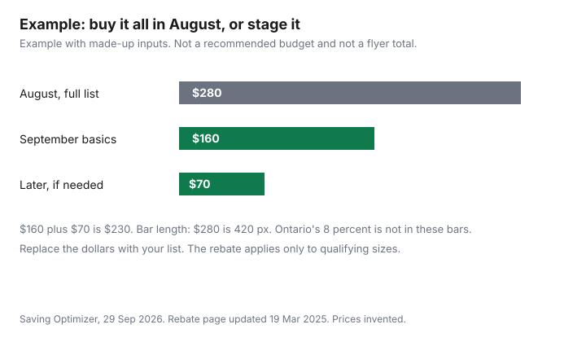

Clothing · Canada
Back-to-School Clothing in Canada: A Budget That Survives September
August is when a lot of back-to-school clothing is bought, and September is when a lot of it is marked down. This page is a list you can reuse next August, not a flyer. It describes a year-round point-of-sale rebate of the 8 percent provincial portion of the HST on qualifying children's clothing and footwear. That page was updated 19 March 2025 and checked 29 Sep 2026. No Canada-wide tax-free week was on it. Other provinces are check your province. The size rules and the new-versus-used split are in the kids' clothing rebate guide.
Key takeaways
- Inventory what still fits before you shop. The first-week list is small: clothes for the actual week, shoes that meet the school rule, and anything the school requires on day one.
- Ontario's children's clothing rebate is the 8 percent provincial portion, year-round on qualifying sizes, not a September tax holiday. The ontario.ca page checked 29 Sep 2026 does not describe a tax-free week.
- Uniforms can be used when the school allows it and the condition is sound.
- Indoor shoes and gym clothes follow the school's rule. Cleats, skates, and injury-prevention footwear are outside Ontario's children's footwear rebate.
- If a price drops after you buy, use the store's price-adjustment policy. That guide is linked. This page does not restate a window it did not re-open. The chart uses made-up inputs.
Inventory first: what still fits
Empty the drawers before you open a flyer. Sort into still fits, too small, and worn out.
Too small goes to a younger child, a swap, or the resale path in the kids' clothing guide. Worn out is not a hand-me-down. Try shoes on the child's feet this week. A shoe that fit in June can be short in September. Write the gaps, not a wish list. The gaps are the shopping list. Everything else can wait, including a colour you like and a logo the child asked for. Food for the lunch kit is a different budget: family grocery budgeting. A line for clothing inside a zero-based plan is the zero-based budgeting guide.
The minimum September list vs what can wait for fall sales
The first week needs enough clothes to get to laundry day, footwear the school will accept, and any item the school named as required on day one. A second pair of pants can wait if one pair is clean.
A pile of new shirts can wait if last year's shirts still fit. Outer layers for a cold snap can wait until the weather is actually cold, unless the child has nothing that closes. Fall sales are a pattern shoppers see. This guide does not cite a retailer's calendar that promises a September markdown date, so it does not give you one. Shop the minimum, then watch the price. The kids' app guide is the other September leak, on a screen rather than a hanger.
By age, without prices
Younger grades need play clothes that survive a floor and a pair of indoor shoes if the school asks. Middle grades add a gym shirt if the school requires one, still without a logo tax. Older students who have moved past Ontario's size cut-offs, girls' Canada Standard Size 16 and boys' size 20 for clothing, or footwear past girls' and boys' size six, do not get that provincial rebate on the adult size. The rebate guide has the exclusions. None of those rows has a dollar. Your list is the blank column in the table.
No tax-free shopping weeks, but check provincial kids' clothing rebates
Unlike some US states, the Ontario rebate page describes no Canada-wide tax-free shopping week. That page describes a point-of-sale rebate of the 8 percent provincial portion of the HST on qualifying children's clothing and footwear, available as a standing rule, not as a dated week.
It was updated 19 March 2025. If the supplier does not give the rebate, the page points you to CRA form GST189. Sizes and exclusions, including costumes, adult sizes, cleats, skates, and ski-boots, are in the kids' clothing guide and should be read before you count the 8 percent. British Columbia lists a PDF titled Children's Clothing and Footwear on its PST publications index. Check your province. A gift card does not create a rebate the receipt does not show.
Uniform schools: new vs used
If the school requires a crest, a colour, or a supplier, read that rule before you buy a lookalike. A used uniform is worth it when the school allows resale, the crest is the current one, and the size fits now.
A used blazer two sizes off, or a crest the school retired, is not a saving. Ask the school office whether a parent sale or a lost-and-found exists. This guide does not cite a board's resale price. Once Upon a Child's homepage describes buying used kids' clothes, and the page checked on 29 Sep 2026 had the United States selected, so it is not cited as a Canadian uniform desk. Confirm any local shop yourself. New is the default when the policy says new, or when the used piece fails condition. The same new-versus-used split as the kids' guide applies to socks and to shoes.
Gym clothes and indoor shoes rules
Many Canadian schools ask for indoor shoes that stay at school, separate from outdoor boots. That is a second pair, and it belongs on the first-week list if the school enforces it on day one.
Gym strips, if required, are also a first-week item. If they are not required, they can wait. Cleats and other sport shoes are often excluded from Ontario's children's footwear rebate. Do not budget the 8 percent on them. Protective gear is a safety buy, not a used bargain from a clothing rack. Write the school's sentence next to the line so you are not buying a rule the school does not have.
Price adjustments if items drop after purchase
A September markdown does not help an August receipt unless the store's policy says it will match its own later price. Policies differ by banner and by province, and some exclude sale events.
The price-adjustment guide is the comparison. This page does not restate a number of days. Keep the receipt. Check the policy before you assume a refund of the difference. A portal or a gift card does not extend a window the store did not publish. If the item was final sale, the kids' rebate question and the price-adjustment question are separate. One can apply when the other does not.
| Stage | Have for the first week | Can wait |
|---|---|---|
| Early elementary | Clothes that still fit for a laundry cycle. Indoor shoes if the school requires them. Outer layer only if nothing else closes. | Extra outfits, costume days, and a size you are guessing for spring. |
| Later elementary | The same, plus a gym shirt if the school named one for week one. | A full set of new logo clothes. Last year's shirt is fine if it fits. |
| Secondary, still in children's sizes | Required uniform pieces and shoes. One week of the rest. | Trend items. Confirm the size still qualifies before you count Ontario's 8 percent. |
| Secondary, adult sizes | What the school requires on day one, and shoes that fit. | Do not apply the Ontario children's rebate to an adult size. The rest of the wardrobe can follow the sales you actually see. |
| Place | What to do in September |
|---|---|
| Ontario | The 8 percent provincial portion of the HST is rebated at the till on qualifying children's clothing and footwear, year-round. Girls' clothing to Canada Standard Size 16, boys' to size 20, or small, medium, or large if there is no Canada Standard Size. Footwear to girls' and boys' size six, or small, medium, or large if there is no number. Costumes, adult sizes, cleats, skates, and ski-boots are out. Form GST189 if the supplier skips the rebate. |
| Other provinces | Check your province. B.C. lists a bulletin titled Children's Clothing and Footwear; check it for B.C. rules. No national tax-free shopping week was on the Ontario page. |
Example with made-up inputs. The dollars are not a recommended budget and not a store total.
| Approach | Illustrative total | What it includes |
|---|---|---|
| August, full list | $280 | First week plus extras bought before any later markdown. Invented. |
| September basics | $160 | The minimum list only. Invented. |
| Later, if still needed | $70 | Pieces you add after you see what was missing. Invented. $160 plus $70 is $230. |

Sources & date stamps
- Ontario Ministry of Finance, HST point-of-sale rebates, ontario.ca, updated 19 March 2025, checked 29 Sep 2026. Eight percent provincial portion. Size limits and exclusions as in the kids' clothing guide. No tax-free week is described on that page. GST189 if the supplier does not rebate.
- The price-adjustment guide is linked instead of restating days. The basket dollars are made up.
Frequently asked questions
How much should I spend on back-to-school clothes?
The illustrative comparison is an August list of $280 against $160 in September plus $70 later. Those dollars are made up. Start from what still fits, buy the first week, and leave the rest until you know it is needed. Ontario's 8 percent rebate applies only to qualifying children's sizes, not to the whole basket.
Is there a tax-free back-to-school week in Canada?
Unlike some US states, the Ontario rebate page checked 29 Sep 2026 does not describe a tax-free shopping week. It describes a year-round point-of-sale rebate of the 8 percent provincial portion of the HST on qualifying children's clothing and footwear. This guide does not cite a national holiday statute. Check your own province before you plan a trip around a week that may not exist.
What clothes do kids need for the first week?
Enough that still fits to reach laundry day, footwear the school accepts, indoor shoes if the school requires them, and any uniform or gym item the school named for day one. Extra shirts, logo pieces, and a spring size can wait. The table in this guide splits that by stage and does not attach a price.
Should I buy used school uniforms?
Yes, when the school allows resale, the crest is current, and the size fits now. No, when the policy requires new, or the piece is worn out. This guide does not cite a board's price. Confirm the rule with the school office before you skip the supplier.
When do back-to-school clothes go on sale?
This guide does not cite a retailer calendar with a September date, so it does not give you one. Buy the minimum first, keep the receipt, and use the store's own price-adjustment policy if the price falls. Those windows are in the price-adjustment guide and were not recopied here.
Researched and drafted with AI assistance and fact-checked against official Canadian sources. How we create content.
Disclosure: Discounted retailer gift cards and cash-back portal offers are offer types. Saving Optimizer may earn a commission if a partner link is added later. No partnership is claimed with any retailer or portal. A card or a portal does not change a tax rebate or a school's dress code. Education only. This page does not name a best store.